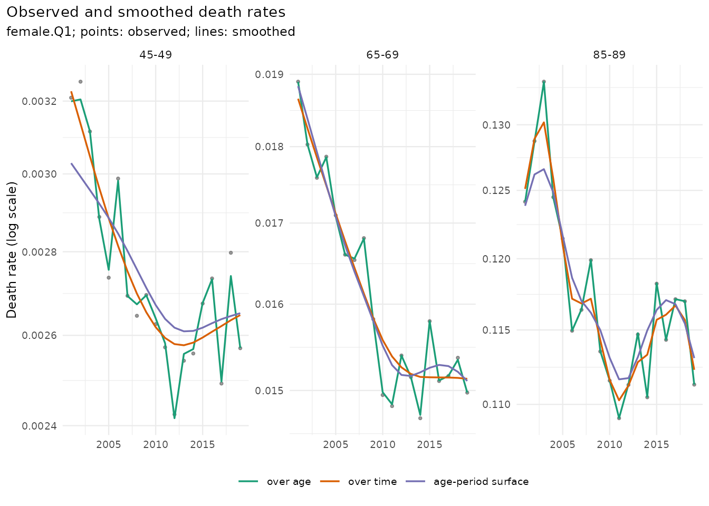
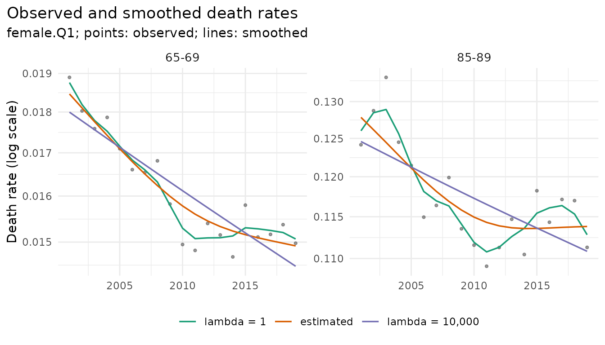
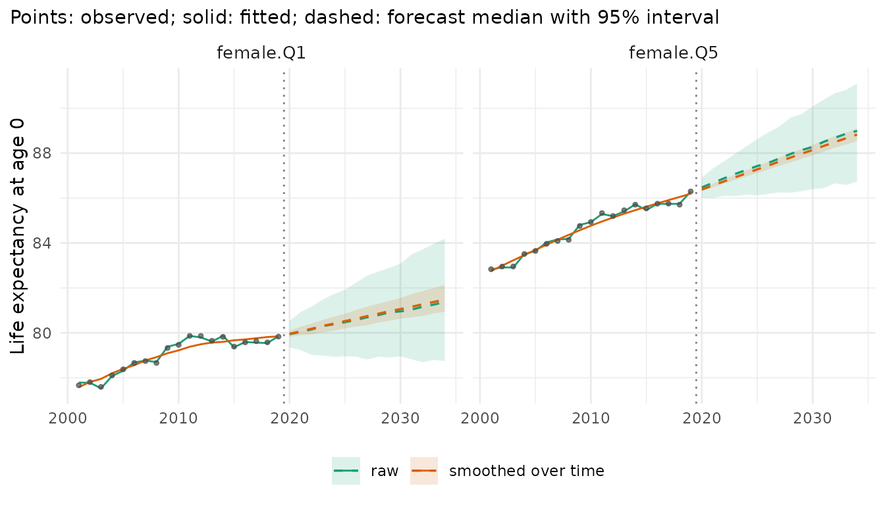

Observed death rates are a trend plus random variation: Poisson noise of the death counts, and transient year effects such as a strong influenza season. Smoothing estimates the trend. This vignette compares the smoothing methods of mortensor on one data set, shows how much each one smooths, and what smoothing does to a forecast. The forecasts use Lee-Carter as a simple, well-known model; any other model works the same way (see “Choosing and combining models”).
Data
Deaths and mid-year populations in England by sex and deprivation quintile (Index of Multiple Deprivation; Q1 most deprived), 5-year age groups, 2001-2019 (ONS, Open Government Licence):
library(mortensor)
library(data.table)
x <- mt_data(deaths = ons_data, population = ons_data, by = c("sex", "imd_decile"), age = "age_group",
value = c(deaths = "all_causes", population = "population"))
x <- mt_as_exposure(x, type = "midyear")
x <- mt_group_levels(x, "imd_decile", function(d) paste0("Q", ceiling(as.numeric(d) / 2)), name = "quintile")Three directions
mt_smooth() smooths in one of three directions:
-
over age, each year separately (Poisson P-splines):
removes noise between neighbouring ages, keeps every year as observed;
the open interval 90+ is expanded into single years, and its exposure is
split over them by a PCLM of the exposures, as in
mt_ungroup(); - over time, each age separately (weighted Whittaker smoothing of the log rates, with the deaths as weights): removes the year-to-year variation, keeps the age pattern of every year;
-
the age-period surface (a quasi-Poisson additive
model with a tensor-product spline
te(age, year), package mgcv): both at once.
sm <- list("over age" = mt_smooth(x),
"over time" = mt_smooth(x, along = "period", method = "whittaker"),
"age-period surface" = mt_smooth(x, dims = 2, method = "gam"))
mt_plot_smooth(x, sm, ages = c("45-49", "65-69", "85-89"), strata = "female.Q1")
The points are the observed rates of women in Q1. Smoothing over age leaves almost all of the year-to-year variation, because with 5-year age groups the neighbouring ages already agree closely; it matters for single years of age and sparse data (small areas, causes of death). Smoothing over time and the surface remove most of the year-to-year variation and keep the trend, including the end of the decline after 2011. Over time, the smoothing parameter is chosen for each age: at 85-89, where deaths are many and the year-to-year variation is large relative to Poisson noise, the smoother keeps much of that variation.
How much was removed
mt_smooth_check() compares the smoothed with the
observed rates:
-
dispersion: variance of the observed deaths around the smoothed ones, relative to Poisson variance, allowing for the degrees of freedom of the smoother. About 1 means the smoother removed Poisson noise only; above 1 means it also removed year effects; well below 1 means it followed the noise. -
trend_ratio: variance of the year-to-year changes of the smoothed rates relative to the observed ones. Small values mean that most of the annual variation was removed.
chk <- rbindlist(lapply(names(sm), function(n) mt_smooth_check(x, sm[[n]])[, method := n]))
chk[, .(dispersion = round(mean(dispersion), 2), trend_ratio = round(mean(trend_ratio), 3)), by = method]
#> method dispersion trend_ratio
#> <char> <num> <num>
#> 1: over age 1.49 0.873
#> 2: over time 1.94 0.167
#> 3: age-period surface 3.27 0.046Over age, the dispersion is 1.5: around the spline, the deaths of
neighbouring age groups vary a little more than Poisson noise. Over time
the observed deaths vary about twice as much as Poisson noise around the
trend (1.9), and around the surface more than three times as much (3.3):
the years differ by more than chance, and smoothing treats these year
effects as noise. The surface removes the most year-to-year variation
(trend_ratio 0.046, against 0.167 over time); the smoother
over time follows ages with many deaths closely, as the figure showed at
85-89. Whether removing year effects is right depends on the question.
For the trend that a forecast continues, it usually is.
How smooth: the smoothing parameter
Every smoother has a parameter that sets how closely it follows the
data. By default it is estimated from the data: by BIC for the P-splines
over age, by generalised cross-validation for smoothing over time (one
value for each age and stratum), and by REML for the surface. It can
also be set by hand (lambda):
lam <- list("lambda = 1" = mt_smooth(x, along = "period", method = "whittaker", lambda = 1),
"estimated" = sm[["over time"]],
"lambda = 1,000,000" = mt_smooth(x, along = "period", method = "whittaker", lambda = 1e6))
mt_plot_smooth(x, lam, ages = c("65-69", "85-89"), strata = "female.Q1")
A small value follows the noise, a large one approaches a straight
line of the log rates. The deaths are the weights, so the same value
smooths less where deaths are many: with lambda = 1e6 the
rates at 65-69 are close to a straight line, while those at 85-89 still
bend. When the choice matters for the forecast, it can be made by
forecast accuracy: try several values and keep the one that forecast the
last years best (mt_tune(), see “Tuning and
recalibration”).
What smoothing does to a forecast
Smoothing changes two things: the level from which a forecast starts,
and the variation from which the model estimates its uncertainty.
Smoothing is a preprocessing step of the fit (prep), so
that backtests repeat it on each training window; the observed rates and
residuals of the fit refer to the raw deaths:
smooth_t <- mt_prep(step_smooth(along = "period", method = "whittaker"))
fc <- list(raw = mt_forecast(mt_fit(lee_carter(), x), h = 15, n_draws = 500, seed = 1),
"smoothed over time" = mt_forecast(mt_fit(lee_carter(), x, prep = smooth_t), h = 15, n_draws = 500,
seed = 1))
mt_compare_forecasts(fc, periods = c(2025, 2034), strata = c("female.Q1", "female.Q5"))
#> Key: <label, period>
#> label period raw smoothed over time
#> <char> <num> <char> <char>
#> 1: female.Q1 2025 80.5 (79.0-81.9) 80.4 (79.8-81.0)
#> 2: female.Q1 2034 81.4 (78.7-84.2) 81.3 (80.3-82.4)
#> 3: female.Q5 2025 87.4 (86.1-88.6) 87.2 (86.9-87.5)
#> 4: female.Q5 2034 89.0 (86.7-91.1) 88.8 (88.2-89.3)
mt_plot_compare(fc, strata = c("female.Q1", "female.Q5"), data = x)
The central forecasts are close; the intervals of the smoothed fit are much narrower (for women in Q1 in 2034, 80.3-82.4 against 78.7-84.2 years). Lee-Carter takes the uncertainty of its forecast from the year-to-year variation of its period index, and smoothing over time has removed most of it. Whether the narrower intervals are still right is a question for a backtest: fit to the years up to an origin, forecast the following years and count how often the observed rates fall inside the intervals (see “Backtesting and scores”):
bt <- mt_compare(list(raw = lee_carter(), "smoothed over time" = list(spec = lee_carter(), prep = smooth_t)),
x, origins = 2010:2014, h = 5, n_draws = 200)
mt_score_table(bt, metrics = c("crps", "cov80", "cov95"))
#> model crps cov80 cov95
#> <fctr> <num> <num> <num>
#> 1: raw 0.0672 0.609 0.795
#> 2: smoothed over time 0.0716 0.461 0.631cov95 is the share of observed rates inside the 95%
intervals, which should be about 0.95. Without smoothing it is 0.80,
with smoothing 0.63: the intervals of Lee-Carter are too narrow on these
data, and those of the smoothed fit much too narrow. The CRPS, a score
of the whole forecast distribution (lower is better), is also worse with
smoothing (0.072 against 0.067). On these data the year-to-year
variation, although about twice Poisson noise, carries information about
the uncertainty of the trend, and smoothing over time does not help the
forecast. It helps where counts are small (causes of death, small
areas), and then together with recalibrated(), which widens
the intervals to the errors of recent forecasts (see “Tuning and
recalibration”).
Summary
| Question | Function |
|---|---|
| Smooth over age, time or both | mt_smooth(dims = , along = , method = ) |
| How much was removed |
mt_smooth_check(), mt_plot_smooth()
|
| Smoothing for a forecast | mt_fit(..., prep = mt_prep(step_smooth(...))) |
| Choose the smoothing parameter by accuracy |
mt_tune() with list(spec = , prep = )
|
Smooth inside the fit, never the data before fitting:
mt_fit() warns and mt_backtest() stops,
because a model fitted to smoothed data takes the smoothed rates for
observations and its intervals become too narrow.